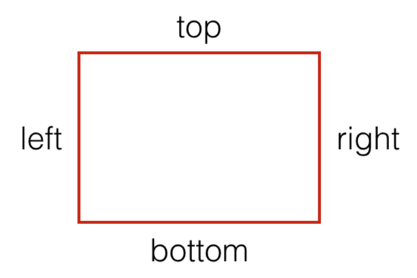
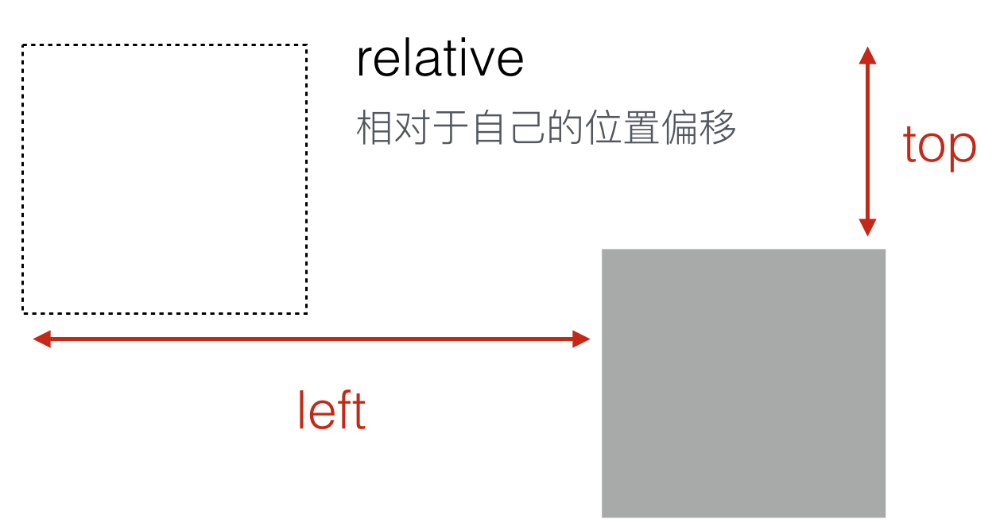
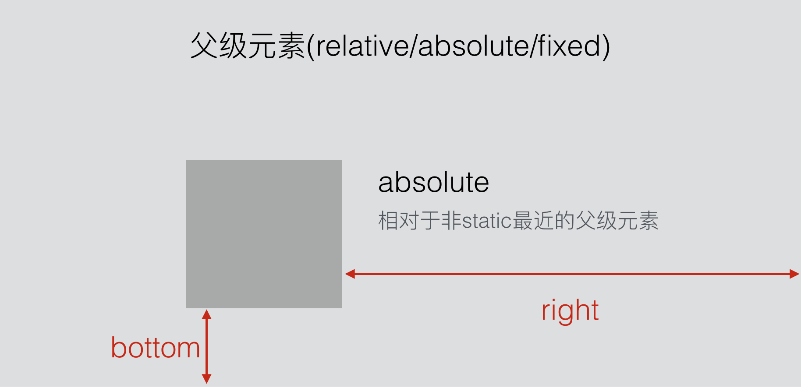
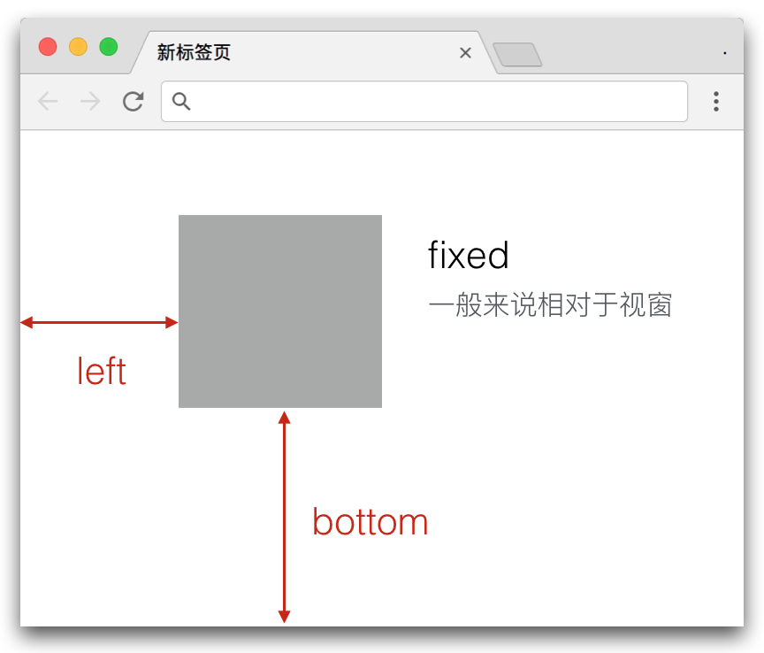
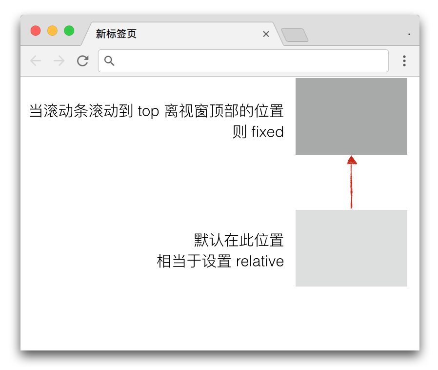

Positioning
概述
Position 属性用来设置元素的定位方式，它有传统的四种取值 static | relative | absolute | fixed，另外还有一个新晋的取值 sticky。
在我们的网页中，随处可见 position 的影子，如下图，红色圈起来的都是 position 的应用：

既然是定位，那么肯定有一个参考点。在一个二维坐标体系中，我们可以使用 (x, y) 来表示一个点，这个坐标是相对于原点 (0, 0) 来进行定位的，如下图：

但是在我们的 CSS 中，因为每个元素都会被渲染成一个个盒子，所以 position 的定位是根据矩形盒子的四条边来的。left、right、top、bottom 分别表示四边，如下图：

于是，对于偏移位置来说：
- x轴方向上，可以使用
left、right属性来表示偏移位置 - y轴方向上，可以使用
top、bottom属性来表示偏移位置
对于参考位置来说，不同的属性将采用不同的参考对象：
static：默认值，将不会发生任何偏移relative：相对于自己的位置偏移absolute：相对于非static最近的父级元素fixed：一般来说相对于视窗sticky： 相对于视窗
属性取值深入
static
默认所有元素 position 的取值都为 static，也就是没有任何效果，即使设置 left、right、top、bottom 也没有任何作用。
如果某个元素一开始设置了非 static 值，后面需要重置该值的时候，就可以将其设置为 static 了。
Demo 效果可查阅：深入 position（包括下面所有的 demo 演示）
relative
relative 一般用于给子元素 absolute 设置参考点。所以它们两个一般是好搭档。只有极少的情况下，才是给自己设置偏移用的。
如下图，虚线框表示原本的位置，设置 relative 后，再使用 left 和 top 来设置偏移：

对 relative 元素进行偏移不会影响其兄弟元素的布局排版（兄弟元素还是以它原始位置进行排版的）。可点击上面 demo 中的按钮“点击查看偏移前后对比”切换效果。
absolute
absolute 为绝对定位，会脱离文档流，作为一个独立的盒子。其偏移参考点为 position 属性值不是 static 值的最近的父级元素。如果任何父级元素都不匹配，则追溯到视窗，如下图：

可点击上面 demo 中的按钮“点击切换有无设置 absolute”切换效果。
对于 absolute，如果该元素的宽高为 auto，同时设置 left 和 right，top 和 bottom 都生效，所围成的区域就是该元素的大小。如果已经设置了宽或高，同时设置 left 和 right，或 top 和 bottom 时，会只取 left 和 top 的值。下面的 fixed 元素也是这样的。
fixed
fixed 为固定定位，同样会脱离文档流，作为一个独立的盒子。其偏移参考为视窗，如下图：

可点击上面 demo 中的按钮“点击切换有无设置 fixed”切换效果。
如果其父级元素有设置 transform 属性，则其偏移参考为最近设置了 transform 属性的父级元素。可点击上面 demo 中的按钮“点击切换有无设置 transform”切换效果。具体解释可参考：transform 规范，原文如下：
For elements whose layout is governed by the CSS box model, any value other than none for the transform results in the creation of both a stacking context and a containing block. The object acts as a containing block for fixed positioned descendants.
简单来说就是生成了一个容器块，关于容器块的解释可参考前面的视觉格式化模型。
sticky
同样相对于视窗，但是在滚动条滚动该元素位置之前，其效果相当于 relative，只有等到滚动条滚动该元素位置，才变成 fixed。由于是新晋值，所以还有些兼容性问题，具体可参考：sticky 兼容
我们之前 table 要实现滚动到顶部的时候 thead 要 fixed 的效果就可以用此属性完成，不过该属性对 table 的支持效果更惨。

注意：如果是上下滚动的 sticky， 则 left、right 属性无效。左右滚动的请自己测试。
PS：left、right、top、bottom 四个属性的取值如果是百分比，则其参考计算的是其容器块的宽高。